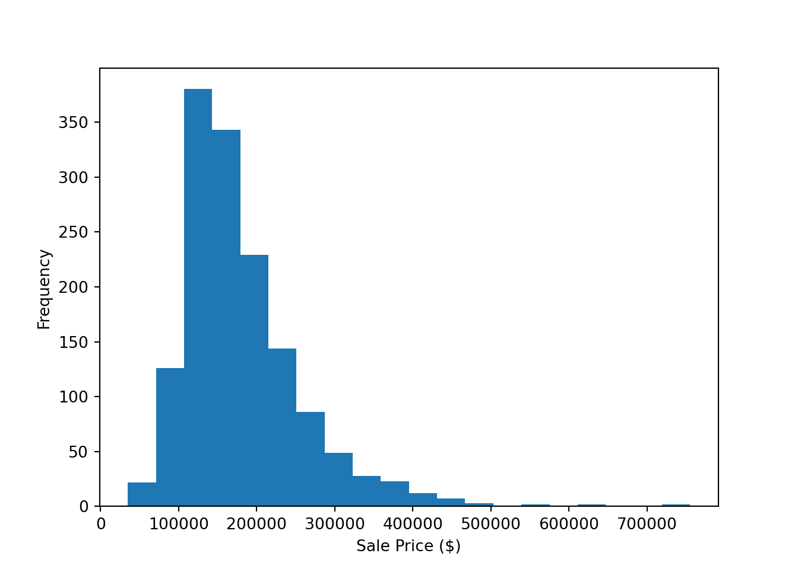

In our previous post, we discussed different modeling approaches and their applications. Today, we will delve deeper into linear regression, one of the most commonly used modeling techniques in data science. By the end, you will learn when to use linear regression and how to code it from start to finish using a dataset from Kaggle.
1. Getting to know Linear Regression
Linear regression is a popular modeling approach used for predicting continuous values. It is a simple yet powerful modeling approach that works well when the relationship between the predictor and response variable is linear. It is important to ensure that the assumptions of linear regression are met, including linearity, independence, normality, and equal variance. These assumptions can be tested using various techniques, such as residual plots and statistical tests. Linear regression models are easy to interpret and can be used for both simple and complex problems.
Simple linear regression involves a single independent variable, while multiple linear regression involves two or more independent variables. Examples of where linear regression is commonly used include predicting housing prices, analyzing stock prices, and estimating crop yields.
2. Data Cleaning and Visualization
When working with real-world data, it is common to encounter missing or erroneous values, inconsistent formatting, and other issues. Data cleaning is the process of detecting and correcting these problems in the data to ensure that it is accurate and reliable for analysis. Visualization, on the other hand, is the process of representing data in a visual format such as graphs, charts, or maps, to help analysts identify patterns and trends.
For this blog post, we will be using a data set from Kaggle’s House Prices: Advanced Regression Techniques competition. This data set contains information on various attributes of residential homes in Ames, Iowa, including their sale prices. The goal of the competition is to build a model that can accurately predict the sale prices of homes based on these attributes.
To start, we will import the necessary libraries in Python, including Pandas for data manipulation and Matplotlib for visualization. We will then load the data set using the read_csv() function from Pandas.
Now that we have loaded the data, we can begin the data cleaning process. The first step is to check for missing values in the data. We can use the isnull() function from Pandas to check for missing values and the sum() function to count the number of missing values in each column.
import pandas as pd
import matplotlib.pyplot as plt
# remove the comment to load the dataset
#df = pd.read_csv("train.csv")
# Check for missing values
missing_values = df.isnull().sum()
print(missing_values)Id 0
MSSubClass 0
MSZoning 0
LotFrontage 259
LotArea 0
...
MoSold 0
YrSold 0
SaleType 0
SaleCondition 0
SalePrice 0
Length: 81, dtype: int64This will give us a count of missing values in each column of the data set. We can then decide how to handle these missing values, depending on the amount of missing data and the nature of the problem. In this case, we will simply drop the columns with more than 50% missing values.
Next, we can check for any duplicate rows in the data set using the duplicated() function from Pandas. If there are any duplicate rows, we can drop them using the drop_duplicates() function.
# Drop columns with more than 50% missing values
df = df.dropna(thresh=len(df)*0.5, axis=1)
# Check for duplicates
duplicates = df.duplicated()
print(duplicates.sum())
# Drop duplicates0df = df.drop_duplicates()Now that we have cleaned the data, we can move on to visualization. One common visualization for exploring the relationship between two variables is a scatter plot. We can create a scatter plot of the sale prices and the living area of the homes using Matplotlib.
# Create a histogram of sale prices
plt.hist(df["SalePrice"], bins=20)(array([ 22., 126., 380., 343., 229., 144., 86., 49., 28., 23., 12.,
7., 3., 1., 2., 1., 2., 0., 0., 2.]), array([ 34900., 70905., 106910., 142915., 178920., 214925., 250930.,
286935., 322940., 358945., 394950., 430955., 466960., 502965.,
538970., 574975., 610980., 646985., 682990., 718995., 755000.]), <BarContainer object of 20 artists>)plt.xlabel("Sale Price ($)")
plt.ylabel("Frequency")
plt.show()
This will give us a visual representation of the distribution of sale prices in the data set. We can see that the distribution is skewed to the right, with a few homes having very high sale prices.
By cleaning and visualizing the data, we can gain a better understanding of its properties and identify any potential issues that may need to be addressed before building a linear regression model.
3. Building a Linear Regression Model
Now that we have cleaned and visualized the data, we can start building a linear regression model to predict the sale prices of homes based on their attributes. Linear regression is a statistical technique that is commonly used for predicting a numeric value based on one or more input variables. In this case, we will use the input variables in the data set to predict the sale price of each home.
To start, we will split the data set into a training set and a validation set using the train_test_split() function from Scikit-learn. The training set will be used to train the model, while the validation set will be used to evaluate the model’s performance.
from sklearn.model_selection import train_test_split
# Split the data set into training and validation sets
train, val = train_test_split(df, test_size=0.2, random_state=42)Next, we will select the input variables that we want to use in the model. In this case, we will use the living area, number of bedrooms, and number of bathrooms as input variables.
# Select the input variables
X_train = train[["GrLivArea", "BedroomAbvGr", "FullBath"]]
y_train = train["SalePrice"]
X_val = val[["GrLivArea", "BedroomAbvGr", "FullBath"]]
y_val = val["SalePrice"]We can then build a linear regression model using the LinearRegression() function from Scikit-learn. We can use it to predict the sale prices of homes in the validation set using the predict() function.
from sklearn.linear_model import LinearRegression
# Build the linear regression model
model = LinearRegression()
model.fit(X_train, y_train)
# Predict the sale prices of homes in the validation setLinearRegression()y_pred = model.predict(X_val)To evaluate the performance of the model, we can calculate the mean squared error (MSE) and the coefficient of determination (R-squared) between the predicted sale prices and the actual sale prices in the validation set using the mean_squared_error() and r2_score() functions from Scikit-learn.
from sklearn.metrics import mean_squared_error, r2_score
# Calculate the mean squared error and R-squared
mse = mean_squared_error(y_val, y_pred)
r2 = r2_score(y_val, y_pred)
print("MSE:", mse)MSE: 2806426667.247853print("R-squared:", r2)R-squared: 0.6341189942328371A low mean squared error and a high coefficient of determination indicate that the model is accurately predicting the sale prices of homes based on their attributes.
By building a linear regression model, we can use the input variables in the data set to predict the sale prices of homes with a high degree of accuracy. This information can be useful for real estate professionals, home buyers, and sellers looking to estimate the value of a residential property.
Summary
In this post, we have explored the process of using linear regression to predict the sale prices of homes based on their attributes. We started by cleaning and visualizing the data to gain insights into the relationships between the input variables and the sale prices. We then built a linear regression model using the Scikit-learn library and evaluated its performance using the mean squared error and coefficient of determination.
By following this process, we can make accurate predictions about the sale prices of homes based on their attributes. This information can be valuable for a variety of applications, including real estate valuation, mortgage underwriting, and investment analysis.
As with any predictive model, it is important to continually evaluate and refine the model over time to ensure that it is accurately predicting the outcome of interest. With continued effort, we can refine our understanding of the relationship between the input variables and the sale prices of homes, and improve the accuracy of our predictions.